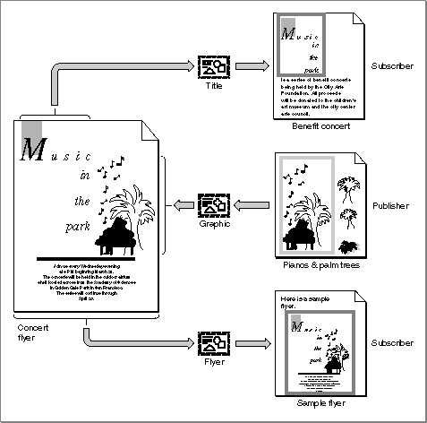

Legacy Document
Important: The information in this document is obsolete and should not be used for new development.
Important: The information in this document is obsolete and should not be used for new development.


Introduction to Publishers, Subscribers, and Editions
A section is a portion of a document that shares its contents with other documents. The Edition Manager supports two types of sections: publishers and subscribers. A publisher is a section within a document that makes its data available to other documents or applications. A subscriber is a section within a document that obtains its data from other documents or applications.Your application writes a copy of the data in each publisher to a separate file called an edition container. The actual data that is written to the edition container is referred to as the edition. Your application obtains the data for each subscriber by reading data from the edition container. Note that throughout this chapter, the term edition refers to the edition container and the data it contains.
You publish data when you want to make it available to other documents and applications. When data is published, it is stored in an edition container. You subscribe to data that a publisher makes available by reading an edition from its container.
Each edition has an icon that is visible from the Finder. Figure 2-1 shows the default edition icon.
- Note
- Section and edition container are programmatic terms. You should not use them in your application or your documentation. Use publishers, subscribers, and editions. You should also refrain from using other terms such as publication or subscription to describe the dynamic sharing of information provided by the Edition Manager. Use the terms publish and subscribe to describe the Edition Manager features.

Figure 2-1 The default edition icon
The name that the user specifies for the edition is located next to the edition icon. For information on providing icons for the editions created by your application, see the chapter "Finder Interface" in Inside Macintosh: Macintosh Toolbox Essentials. Figure 2-2 illustrates a document containing a single publisher, its corresponding edition, and a subscriber to the edition in another document.
Figure 2-2 A publisher, an edition, and a subscriber
Note that the publisher and subscriber borders illustrated in Figure 2-2 may appear slightly different from the borders you see on the screen. Figure 2-6 on page 2-9 shows the publisher and subscriber borders as they appear onscreen.
Data always flows in one direction, from publisher to edition to subscriber. Documents that contain publishers and subscribers do not have to be open at the same time to share data. Whenever the user saves a document that contains a publisher, the edition changes to reflect the current data from the publisher. All subscribers update their contents from the edition. Any number of subscribers can subscribe to a single edition.
To create a publisher within a document, a user selects an area of the document to share and chooses Create Publisher from the Edit menu (see Figure 2-7 on page 2-10). Figure 2-3 shows the dialog box that your application should display when the user chooses Create Publisher.
Figure 2-3 The publisher dialog box
Your application provides a thumbnail sketch of the edition data, which the Edition Manager displays in the preview area of the publisher dialog box. Your preview of the edition in this dialog box should provide a visual cue about the type of information that the user has selected to publish.
A preview area also appears in the subscriber dialog box (see Figure 2-4). This preview, too, should provide a visual cue about the type of information the edition contains. For example, it should allow users to distinguish between text information and spreadsheet arrays.
The publisher dialog box uses the extended interface of the standard file dialog box that accompanies System 7. The user navigates through the contents of the disk using the mouse or keyboard.
A user can modify a publisher within a document just like any other portion of a document. As a default, each time a user saves a document containing a publisher, your application should automatically write the publisher's data to the edition. You also need to provide the user with the choice of sending new publisher data to an edition manually (that is, only at the user's specific request). You should provide these options by using the publisher options dialog box described later in "Using Publisher and Subscriber Options" beginning on page 2-43.
For example, one user may choose to update an edition automatically each time a document is saved. This update mode is useful for a user who creates a publisher within a spreadsheet application that records stock information. Each time the user updates the stock information and saves the spreadsheet, a new edition automatically becomes available to subscribers.
Another user may choose to update an edition only upon request. This update mode might be useful for a user who creates a publisher within a word-processing application for a quarterly sales report. The user incrementally updates the sales report throughout the entire quarter but does not want this information to be available to subscribers until the end of the quarter. Only at the end of each quarter does the user specifically request to update the edition and make it available to any subscribers.
To create a subscriber within a document, the user places the insertion point and chooses Subscribe To from the Edit menu. Figure 2-4 shows the dialog box that your application should display when the user chooses Subscribe To.
Figure 2-4 The subscriber dialog box
The subscriber dialog box also uses the extended interface of the standard file dialog box introduced with System 7. Initially, the dialog box should highlight the name of the last edition published or subscribed to. This allows a user to create a publisher and immediately subscribe to its edition.
A subscriber receives its data from a single edition. By default, your application should automatically update a document containing a subscriber whenever a new edition is available. You also need to provide the user with the choice of receiving the latest edition manually (that is, only when the user specifically requests it). You can provide these options by using the subscriber options dialog box described later in "Using Publisher and Subscriber Options" beginning on page 2-43.
For example, one user may choose to receive new editions automatically as they become available. This update mode is useful for a user who subscribes to information from an edition that consists of daily sales figures. This user automatically acquires each version of the sales information as it becomes available.
Another user may choose to receive a new edition only upon request. This update mode is useful for a user who creates a subscriber to an edition that consists of graphics data (such as a company logo). The user may require only periodic versions of the logo and not need frequent updates. In this case, your application should update the subscriber with a new edition only when the user specifically requests it.
A user can select, cut, copy, or paste an entire subscriber. Although the contents of the subscriber as a whole can be modified, a user cannot edit portions of a subscriber. For example, a user can underline or italicize the entire subscriber text but cannot delete a sentence or rotate a single graphic object. This restriction protects the user from losing changes to a subscriber when a new edition arrives. Remember that, as a default, new editions should automatically update a subscriber. Any changes that a user made to the subscriber text would have to be reapplied by the user when the new edition arrives. See "Modifying a Subscriber" on page 2-59 for further information.
A single document can contain any number or combination of publishers and subscribers. Figure 2-5 shows an example of a document that contains two publishers and one subscriber (and their corresponding editions). Remember that data always flows in one direction, from publisher to edition to subscriber. The "Concert flyer" document contains a publisher that is subscribed to by the "Benefit concert" document. The "Concert flyer" document also subscribes to a portion of the "Pianos & palm trees" document. In addition, the "Concert flyer" document as a whole is subscribed to by the "Sample flyer" document.
Figure 2-5 A document and its corresponding editions

You should distinguish each selected publisher and subscriber within a document with a border. Display a publisher border as three pixels wide with 50 percent gray lines, and display a subscriber border as three pixels wide with 75 percent gray lines. A rectangle of one white pixel should separate the data from the border itself. Borders should be drawn outside the contents of publishers and subscribers so that data is not obscured. See
Figure 2-6 for an illustration of the borders as they appear onscreen. See "Displaying Publisher and Subscriber Borders" on page 2-50 for detailed information on how to implement borders for specific applications.Figure 2-6 shows a document containing a publisher and a document containing a subscriber, with borders displayed for each.
Borders for publishers and subscribers should behave like the borders of
'PICT'graphics within a word-processing document. Your application should display a border whenever the user clicks within the content area of a publisher or a subscriber. Your application should hide the border whenever the user clicks outside the content area. See "Displaying Publisher and Subscriber Borders" on page 2-50 for detailed information on how to implement borders for specific applications.Figure 2-6 Publisher and subscriber borders
You also need to support the standard Edition Manager menu commands in the Edit menu. These menu items include
Use a divider to separate the Edition Manager menu commands from the standard Edit menu commands Cut, Copy, and Paste. Figure 2-7 shows the standard Edition Manager menu commands.
- Create Publisher...
- Subscribe To...
- Publisher/Subscriber Options...
- Show/Hide Borders (optional)
- Stop All Editions (optional)
Figure 2-7 Edition Manager commands in the Edit menu
The Subscriber Options menu command should toggle with the Publisher Options menu command. When a user selects a subscriber and then accesses the menu bar, your application should adjust its menus so that the Subscriber Options menu command appears in the Edit menu. When a user selects a publisher and then accesses the menu bar, your application should adjust its menus so that the Publisher Options menu command appears in the Edit menu. In addition, you may support a Show Borders menu command that toggles with Hide Borders to display or hide all publishers and subscriber borders within documents. You may also support a Stop All Editions menu command to provide a method for temporarily suspending all update activity in a document. When the user chooses this command, you should place a checkmark next to it. You should also stop all publishers from sending data to editions and all subscribers from receiving new editions. When the user chooses this command again, remove the checkmark and update any subscribers that are set up to receive new editions automatically.
If you find that you need all of the available space in the Edit menu for your application's commands, you may create a hierarchical menu for the Edition Manager menu commands. If you choose to implement this structure, you should allow users to access the Edition Manager menu commands through a Publishing menu command in the Edit menu. Because this menu structure is not as accessible to users, you should implement it only if you have no other alternative.
Figure 2-8 shows the Edition Manager menu commands in a hierarchical menu structure.
Figure 2-8 Edition Manager commands under the Publishing menu command
For each publisher or subscriber within an open document, you must have a section record and an alias record. The section record contains a time stamp that records the version of the data that resides in the section. The section record also identifies the section as either a publisher or subscriber, and it establishes a unique identity for each publisher or subscriber. The section record does not contain the data within the section. The alias record is a reference to the edition container from the document that contains the corresponding publisher or subscriber section.
There are special options associated with publishers and subscribers within documents. Your application can use the publisher and subscriber options dialog boxes provided by the Edition Manager to make these choices available to the user. For example, a user can select Open Publisher within the subscriber options dialog box to access the document containing the publisher. Your application can also allow a user to cancel subscribers or publishers within documents, specify when to update an edition from a publisher, or specify when to update a subscriber with a new edition. These options are described in "Using Publisher and Subscriber Options" beginning on page 2-43.